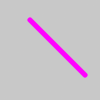
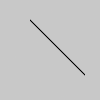
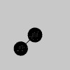

Draws a straight line between two points.
A line's default width is one pixel. The version of line() with four parameters drawsthe line in 2D. To color a line, use the stroke() function. To change its width, use thestrokeWeight() function. A line can't be filled, so the fill() function won't affect the line'scolor.
The version of line() with six parameters allows the line to be drawn in 3D space.Doing so requires adding the WEBGL argument to createCanvas().
function setup() {ㅤㅤcreateCanvas(100, 100);
ㅤㅤbackground(200);
ㅤㅤline(30, 20, 85, 75);
ㅤㅤdescribe(ㅤㅤㅤㅤ'A black line on a gray canvas running from top-center tobottom-right.'ㅤㅤ);}

function setup() {ㅤㅤcreateCanvas(100, 100);
ㅤㅤbackground(200);
ㅤㅤ// Style the line.ㅤㅤstroke('magenta');ㅤㅤstrokeWeight(5);
ㅤㅤline(30, 20, 85, 75);
ㅤㅤdescribe(ㅤㅤㅤㅤ'A thick, magenta line on a gray canvas running from top-ㅤcenter to bottom-right.'ㅤ);}
function setup() {ㅤㅤcreateCanvas(100, 100);
ㅤㅤbackground(200);
ㅤㅤ// Top.ㅤㅤline(30, 20, 85, 20);
ㅤㅤ// Right.ㅤㅤstroke(126);ㅤㅤline(85, 20, 85, 75);
ㅤㅤ// Bottom.ㅤㅤstroke(255);line(85, 75, 30, 75);
ㅤㅤdescribe(ㅤㅤㅤㅤ'Three lines drawn in grayscale on a gray canvas. They white circle at the bottom-right.'form the top, right, and bottom sides of a square.'ㅤ);}

function setup() {ㅤㅤcreateCanvas(100, 100, WEBGL);
ㅤㅤbackground(200);
ㅤㅤline(-20, -30, 35, 25);
ㅤㅤdescribe(ㅤㅤㅤㅤ'A black line on a gray canvas running from top-center tobottom-right.'ㅤ);}

function setup() {ㅤㅤcreateCanvas(100, 100, WEBGL);
ㅤㅤdescribe('A black line connecting two spheres. The scenespins slowly.');}
function draw() {ㅤㅤbackground(200);
ㅤㅤ// Rotate around the y-axis.ㅤㅤrotateY(frameCount * 0.01);
ㅤㅤ// Draw a line.ㅤㅤline(0, 0, 0, 30, 20, -10);
ㅤㅤ// Draw the center sphere.ㅤㅤsphere(10);
ㅤㅤ// Translate to the second point.ㅤㅤtranslate(30, 20, -10);
ㅤㅤ// Draw the bottom-right sphere.ㅤㅤsphere(10);}
line(x1, y1, x2, y2)
line(x1, y1, z1, x2, y2, z2)
x1ㅤㅤㅤㅤㅤㅤNumber: the x-coordinate of the first point.y1ㅤㅤㅤㅤㅤㅤNumber: the y-coordinate of the first point.x2ㅤㅤㅤㅤㅤㅤNumber: the x-coordinate of the second point.y2ㅤㅤㅤㅤㅤㅤNumber: the y-coordinate of the second point.z1ㅤㅤㅤㅤㅤㅤNumber: the z-coordinate of the first point.z2ㅤㅤㅤㅤㅤㅤNumber: the z-coordinate of the second point.